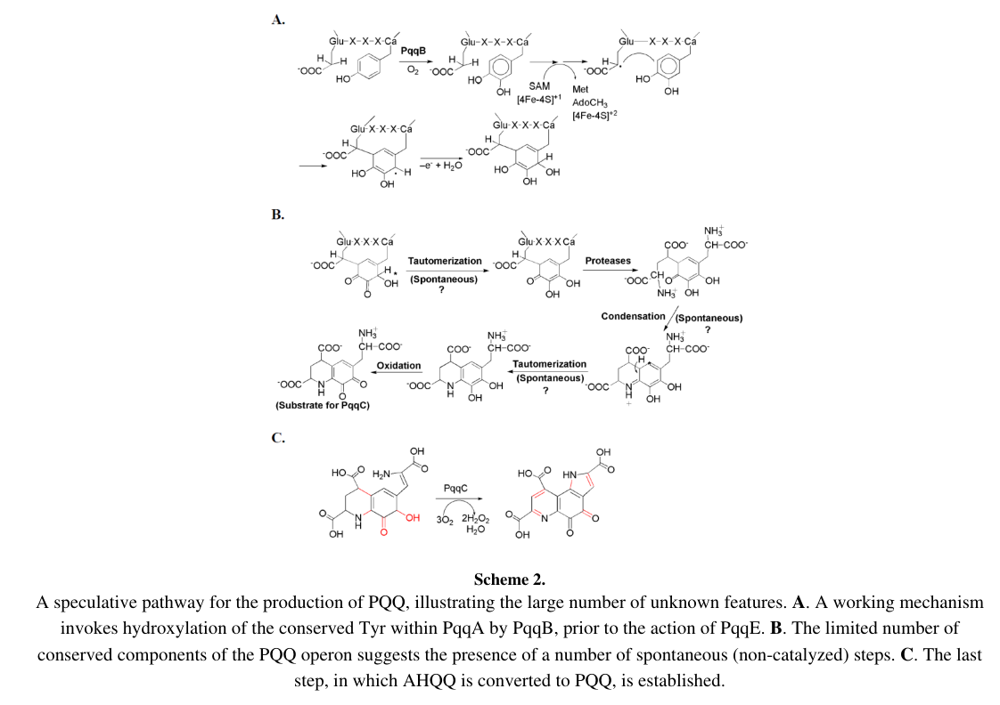

pqqB encodes a metallo-beta-lactamase-fold, non-heme iron hydroxylase in pyrroloquinoline quinone (PQQ) biosynthesis. PqqB is inferred to catalyze oxygen-insertion chemistry on a PqqA-derived pathway intermediate, helping form the quinone chemistry required for subsequent PqqC-dependent production of mature PQQ. The exact native substrate, product, and relationship to pathway-specific proteolysis remain incompletely resolved.
| GO Term | Evidence | Action | Reason |
|---|---|---|---|
|
GO:0018189
pyrroloquinoline quinone biosynthetic process
|
IEA
GO_REF:0000120 |
ACCEPT |
Summary: This process annotation should be retained. PqqB is a conserved PQQ-pathway protein, and primary biochemical/structural work supports a PqqB hydroxylase role in maturation of PqqA-derived intermediates during PQQ biosynthesis.
Reason: PqqB is required for the PQQ pathway; the more recent literature refines its role from possible precursor transport to hydroxylase chemistry within pyrroloquinoline quinone biosynthesis.
Supporting Evidence:
file:PSEPK/pqqB/pqqB-uniprot.txt
PATHWAY: Cofactor biosynthesis; pyrroloquinoline quinone biosynthesis.
file:PSEPK/pqqB/pqqB-goa.tsv
GO:0018189 pyrroloquinoline quinone biosynthetic process
PMID:30811189
strongly implicate PqqB as a novel non-heme hydroxylase
file:PSEPK/pqqB/pqqB-deep-research-falcon.md
PqqB is part of PQQ biosynthesis and is transcriptionally co-induced with neighboring pqq genes under antibiotic stress.
file:PSEPK/pqqB/pqqB-deep-research-falcon.md
PP_0379 is explicitly annotated as **pqqB** and is genomically adjacent to **pqqC (PP0378)** and **pqqA (PP0380)**
|
|
GO:0016705
oxidoreductase activity, acting on paired donors, with incorporation or reduction of molecular oxygen
|
ISS
PMID:30811189 Discovery of Hydroxylase Activity for PqqB Provides a Missin... |
NEW |
Summary: PqqB should have an oxygen-incorporating oxidoreductase molecular-function annotation. The available primary literature supports a non-heme hydroxylase activity, although GO currently lacks a PqqB-specific hydroxylase term.
Reason: GO:0016705 is a broad current parent term for the conserved PqqB oxygenase/hydroxylase chemistry. The direct biochemical demonstration of iron-dependent hydroxylase activity was made on Methylorubrum extorquens AM1 PqqB (UniProtKB:Q49149; PMID:30811189), so Q49149 is the explicit with/from source for this KT2440 orthology inference, not evidence of a direct assay of Q88QV5. Falcon deep research independently corroborates the oxygenase-like molecular function from the metallo-beta-lactamase fold and a non-heme-oxygenase facial triad, while emphasizing that strain-specific kinetics for KT2440 PqqB remain unproven.
Supporting Evidence:
PMID:30811189
show that PqqB is a previously uncharacterized hydroxylase
PMID:30811189
strongly implicate PqqB as a novel non-heme hydroxylase
file:PSEPK/pqqB/pqqB-deep-research-falcon.md
PqqB likely acts as a **non-heme metallo-oxygenase** in PQQ biosynthesis
file:PSEPK/pqqB/pqqB-deep-research-falcon.md
a motif typical of **non-heme metal-binding oxygenases**, supporting an oxygenase-like hypothesis
|
Q: What is the native PqqB substrate and metal/co-substrate requirement in KT2440: cross-linked Glu-Tyr peptide, a cleaved diamino acid intermediate, or a downstream hydroxylated product?
Experiment: Reconstitute KT2440 PqqA/PqqD/PqqE/PqqB reactions and track oxygen incorporation and hydroxylated intermediates by LC-MS using wild-type and active-site mutant PqqB.
Hypothesis: KT2440 PqqB catalyzes hydroxylation of a PqqA-derived cross-linked intermediate during PQQ biosynthesis.
Type: reconstituted pathway biochemistry
The research report should be a detailed narrative explaining the function, biological processes, and localization of the gene product. Citations should be given for all claims.
You should prioritize authoritative reviews and primary scientific literature when conducting research. You can supplement
this with annotations you find in gene/protein databases, but these can be outdated or inaccurate.
We are specifically interested in the primary function of the gene - for enzymes, what reaction is catalyzed, and what is the substrate specificity? For transporters, what is the substrate? For structural proteins or adapters, what is the broader structural role? For signaling molecules, what is the role in the pathway.
We are interested in where in or outside the cell the gene product carries out its function.
We are also interested in the signaling or biochemical pathways in which the gene functions. We are less interested in broad pleiotropic effects, except where these elucidate the precise role.
Include evidence where possible. We are interested in both experimental evidence as well as inference from structure, evolution, or bioinformatic analysis. Precise studies should be prioritized over high-throughput, where available.
The target protein is coenzyme PQQ synthesis protein B (PqqB) encoded by pqqB with ordered locus name PP_0379 in Pseudomonas putida strain KT2440. In P. putida KT2440, PP_0379 is explicitly annotated as pqqB and is genomically adjacent to pqqC (PP0378) and pqqA (PP0380) in a clustered region implicated in PQQ biosynthesis. (fernandez2012mechanismsofresistance pages 10-15)
PQQ is an enzymatic redox cofactor (a “quinocofactor”) used by multiple bacterial dehydrogenases. The biosynthesis of PQQ is genetically encoded by a dedicated pqq operon; a canonical example contains pqqA–F. (klinman2014intriguesandintricacies pages 2-4)
PQQ is synthesized from a small peptide precursor PqqA, with conserved residues (notably Glu and Tyr) contributing to the final cofactor structure. A mechanistic working model proposes that PqqB acts early, likely by hydroxylating the conserved Tyr within PqqA, prior to radical-SAM chemistry by PqqE; later, PqqC catalyzes a multi-step oxidation/ring-closure converting an advanced intermediate (AHQQ) to PQQ. (klinman2014intriguesandintricacies pages 26-37, klinman2014intriguesandintricacies media 63b6eef5)
The PqqB step remains one of the less directly validated transformations in the pathway, with some genetic data historically described as ambiguous regarding absolute essentiality, while structural/bioinformatic evidence supports a key role. (klinman2014intriguesandintricacies pages 2-4)
The strongest synthesis from authoritative review and structural inference is:
- Reaction type (proposed): oxygen-dependent hydroxylation chemistry (non-heme metallo-oxygenase-like)
- Putative substrate: the PqqA peptide (specifically the conserved Tyr sidechain)
- Pathway position: early step, upstream of PqqE radical-SAM-mediated C–C bond formation
This proposed Tyr hydroxylation step is explicitly depicted in the pathway scheme and described as part of a “working mechanism.” (klinman2014intriguesandintricacies pages 26-37, klinman2014intriguesandintricacies media 63b6eef5)
PqqB proteins are homologous to the metallo-β-lactamase fold superfamily and have an X-ray structure (review cites PDB 3JXP). Structural comparison to the metallo-β-lactamase-family enzyme PhnP suggests PqqB retains the overall fold but differs in metal-binding architecture. Critically, PqqB retains residues forming a 2-His/1-carboxylate ‘facial triad’, a motif typical of non-heme metal-binding oxygenases, supporting an oxygenase-like hypothesis rather than β-lactam hydrolysis. (klinman2014intriguesandintricacies pages 2-4, klinman2014intriguesandintricacies pages 37-50)
PqqB also appears to contain a structural Zn²⁺ site (conserved cysteine motif) that may stabilize the protein rather than directly catalyze the primary chemistry; notably, the presumed catalytic metal (e.g., Fe) was not observed at the active site in the solved structure, which could reflect metal lability or purification/crystallization conditions. (klinman2014intriguesandintricacies pages 2-4, klinman2014intriguesandintricacies pages 37-50, he2008towardthestructure pages 70-78)
Within the retrieved corpus, direct biochemical assays defining PqqB substrate specificity, kinetic parameters, or a chemically confirmed product for KT2440 PqqB were not found. Therefore, the “PqqA Tyr hydroxylase/non-heme oxygenase” assignment should be treated as structure- and pathway-model-supported, rather than fully enzyme-assay-proven, for this specific protein. (klinman2014intriguesandintricacies pages 2-4, klinman2014intriguesandintricacies pages 37-50)
In P. putida KT2440, pqqC–pqqB–pqqA occur as an adjacent cluster PP0378–PP0380, consistent with a coordinated biosynthetic module. (fernandez2012mechanismsofresistance pages 10-15)
A separate pqq gene component is located elsewhere: pqqD is encoded at PP2681, indicating that in KT2440 the PQQ pathway genes can be distributed across the genome rather than forming one contiguous pqqA–F operon. (fernandez2012mechanismsofresistance pages 10-15)
In a chloramphenicol stress condition, the KT2440 pqqCBA region shows coordinated transcriptional induction: pqqA 4.5-fold, pqqC 2.8-fold, pqqB 2.2-fold upregulation. (fernandez2012mechanismsofresistance pages 28-33)
The same study links a regulator (AgmR) to expression changes that include pqqA, suggesting regulatory wiring that can modulate PQQ biosynthesis under stress. (fernandez2012mechanismsofresistance pages 10-15)
Insertional disruption of pqqB (PP_0379) and pqqC (PP_0378) is associated with compromised growth under chloramphenicol and reduced MIC values relative to parental strain in that assay system, consistent with PQQ-pathway contributions to cellular physiology under stress. (fernandez2012mechanismsofresistance pages 28-33, fernandez2012mechanismsofresistance pages 10-15)
Direct experimental localization (e.g., fractionation, microscopy, signal peptide validation) for KT2440 PqqB was not found in the retrieved texts. However, PQQ-dependent enzymes that use PQQ as a cofactor (e.g., quinoprotein dehydrogenases) are commonly associated with the periplasmic space in Gram-negative bacteria, implying that PQQ biosynthesis must provide cofactor to periplasm-facing redox systems. This background does not directly localize PqqB itself, but it motivates the expectation that PQQ biosynthesis is functionally linked to envelope-associated redox metabolism. (klinman2014intriguesandintricacies pages 1-2)
Accordingly, the most defensible statement from retrieved evidence is: KT2440 PqqB is a PQQ-biosynthesis enzyme encoded in a pqq gene cluster (PP0378–PP0380), but its precise subcellular compartment remains undetermined here. (fernandez2012mechanismsofresistance pages 10-15)
A major application area for PQQ biosynthesis genes (including pqqB) is phosphate solubilization by soil and plant-associated bacteria.
Mechanistic link: PQQ is required as a cofactor for membrane-bound glucose dehydrogenase (GDH) that produces gluconic acid (and related acids), acidifying the environment and mobilizing insoluble phosphate. (anzuay2024employmentofpqqe pages 1-2, chen2024genomebasedidentificationof pages 1-2)
Quantitative evidence (2024): In a genome-guided analysis of phosphate-solubilizing bacteria, 76 PSB genomes were analyzed and 73 strains were experimentally assessed; phosphate release varied widely (example values reported include ~92–96 µg/mL for strong solubilizers under specific conditions) and was associated with decreased medium pH (~4.2–5.2 for strong solubilizers in examples). The study used qPCR to detect pqq gene clusters with a threshold Ct < 30. (chen2024genomebasedidentificationof pages 2-3)
In a highlighted strain (51-Y1415) across a 144-h cultivation time course, phosphate release showed strong correlations with pqq gene abundance, including P release vs pqqB: r = 0.902 (statistically significant as reported), and phosphate release correlated with 2-keto-D-gluconic acid (r ≈ 0.903). (chen2024genomebasedidentificationof pages 5-7, chen2024genomebasedidentificationof pages 7-9)
These 2024 data support the practical use of pqq genes as screening markers for identifying high-performing phosphate-solubilizing strains, even though the work emphasizes pqqC most strongly for marker utility. (chen2024genomebasedidentificationof pages 2-3, chen2024genomebasedidentificationof pages 7-9)
A 2024 study developed pqqE as a molecular marker to trace Gram-negative phosphate-solubilizing bacteria in environmental samples, noting that pqqA–E are commonly found together as an operon in studied strains while pqqF can be separated and more variable. This provides an applied framework where the presence of core pqq genes (including pqqB) is used to infer capacity for PQQ-dependent phosphate solubilization. (anzuay2024employmentofpqqe pages 1-2)
The authoritative Chemical Reviews analysis emphasizes the pathway’s mechanistic uncertainties while highlighting strong structural inference for PqqB (metallo-β-lactamase fold, oxygenase-like facial triad) and proposing a specific role (Tyr hydroxylation of PqqA). This is a leading expert synthesis, but it explicitly reflects that parts of the pathway are not fully resolved and that some steps may occur spontaneously rather than enzymatically, underscoring ongoing open questions in PQQ biosynthesis. (klinman2014intriguesandintricacies pages 26-37, klinman2014intriguesandintricacies pages 2-4)
A key scheme summarizing the proposed pathway places PqqB at the step of hydroxylating the conserved Tyr in PqqA. (klinman2014intriguesandintricacies media 63b6eef5)
The following tables consolidate the key evidence and recent developments in a citable format.
| Claim (what PqqB does) | Evidence type (experiment/structure/bioinformatics) | Key details (e.g., locus, fold change, motifs) | Source (author/year) | URL/DOI | Citation ID |
|---|---|---|---|---|---|
| PP_0379 in Pseudomonas putida KT2440 is pqqB, a coenzyme PQQ synthesis protein | Experiment/annotation | PP_0379 annotated as pqqB; adjacent to pqqC (PP0378) and pqqA (PP0380) in a clustered region | Fernández et al. 2012 | https://doi.org/10.1128/AAC.05398-11 | (fernandez2012mechanismsofresistance pages 10-15) |
| pqqB participates in a coordinately regulated pqqCBA biosynthetic region in KT2440 | Transcriptomics/experiment | In chloramphenicol-containing medium, pqqB upregulated 2.2-fold, with pqqC 2.8-fold and pqqA 4.5-fold, supporting pathway co-regulation | Fernández et al. 2012 | https://doi.org/10.1128/AAC.05398-11 | (fernandez2012mechanismsofresistance pages 28-33) |
| Disrupting pqqB affects a measurable cellular phenotype in KT2440, supporting functional importance of the gene | Mutant phenotype/experiment | mut::pqqB showed reduced chloramphenicol MIC relative to parental KT2440R and impaired growth under stress, consistent with a physiologically relevant PQQ-biosynthesis role | Fernández et al. 2012 | https://doi.org/10.1128/AAC.05398-11 | (fernandez2012mechanismsofresistance pages 28-33, fernandez2012mechanismsofresistance pages 10-15) |
| PqqB belongs to a metallo-β-lactamase-fold protein family rather than a classical β-lactamase enzyme | Structure/bioinformatics | Review notes PqqB is homologous to metallo-β-lactamase family proteins; crystal structure available (PDB 3JXP) | Klinman & Bonnot 2014 | https://doi.org/10.1021/cr400475g | (klinman2014intriguesandintricacies pages 2-4) |
| PqqB likely acts as a non-heme metallo-oxygenase in PQQ biosynthesis | Structure-based functional inference | Putative active site retains a 2-His/1-carboxylate facial triad, characteristic of non-heme oxygenases; comparison made to PhnP | Klinman & Bonnot 2014 | https://doi.org/10.1021/cr400475g | (klinman2014intriguesandintricacies pages 2-4, klinman2014intriguesandintricacies pages 37-50) |
| PqqB likely binds a structural Zn²⁺ and may require a different catalytic metal at the active site | Structure/comparative analysis | Crystal structure shows Zn²⁺ at a structural site; active-site metal absent in solved structure; conserved cysteines support structural Zn-binding motif | Klinman & Bonnot 2014; He 2008 | https://doi.org/10.1021/cr400475g ; https://doi.org/10.4236/jbpc.2012.32023 | (klinman2014intriguesandintricacies pages 2-4, klinman2014intriguesandintricacies pages 37-50, he2008towardthestructure pages 70-78) |
| The leading mechanistic model is that PqqB hydroxylates the conserved Tyr residue in PqqA early in the pathway | Mechanistic inference/review | Proposed step occurs before PqqE radical-SAM chemistry; highlighted in pathway scheme and review discussion | Klinman & Bonnot 2014 | https://doi.org/10.1021/cr400475g | (klinman2014intriguesandintricacies pages 26-37, klinman2014intriguesandintricacies media 63b6eef5) |
| Recent literature continues to place PqqB in the core PQQ biosynthetic enzyme set and sometimes describes it as a hydroxylase | Recent review/application-oriented synthesis | 2024 study describes PQQ formation via PqqE, PqqD, PqqB (dual hydroxylase), and PqqC; emphasizes linkage to PQQ-dependent GDH and phosphate solubilization | Chen et al. 2024 | https://doi.org/10.1186/s13568-024-01745-w | (chen2024genomebasedidentificationof pages 7-9) |
| Abundance of pqqB tracks with phosphate-solubilization output in a 2024 PSB study, supporting pathway relevance in applied settings | Quantitative correlation/application | In strain 51-Y1415 over 144 h, correlation of P release vs pqqB abundance = 0.902; P release also correlated with 2-keto-D-gluconic acid* production | Chen et al. 2024 | https://doi.org/10.1186/s13568-024-01745-w | (chen2024genomebasedidentificationof pages 5-7, chen2024genomebasedidentificationof pages 7-9) |
| Direct biochemical substrate specificity of P. putida PqqB remains unresolved despite strong family-level inference | Evidence gap/assessment | Retrieved sources support pathway membership and structure-based oxygenase hypothesis, but do not provide direct kinetics or purified-enzyme substrate specificity for KT2440 PqqB | Synthesis from retrieved evidence | https://doi.org/10.1021/cr400475g ; https://doi.org/10.1128/AAC.05398-11 | (fernandez2012mechanismsofresistance pages 10-15, klinman2014intriguesandintricacies pages 2-4, klinman2014intriguesandintricacies pages 37-50) |
Table: This table summarizes the main experimental, structural, and bioinformatic evidence supporting the annotation and likely pathway role of PqqB (PP_0379; UniProt Q88QV5) in Pseudomonas putida KT2440. It is useful for distinguishing direct strain-specific evidence from broader family-level functional inference.
| Study (year) | System/organism | What was done (application) | Key quantitative results | Relevance to pqqB/PQQ pathway | URL/DOI | Citation ID |
|---|---|---|---|---|---|---|
| Chen et al. (2024) | 76 soil phosphate-solubilizing bacterial isolates; highlighted strain Burkholderia cepacia 51-Y1415 | Genome-guided screening of PSB using pqq gene clusters as markers for agricultural phosphate-solubilizer discovery | 76 genomes analyzed; 73 strains experimentally assessed; P release examples included 96.32 ± 27.05 µg mL⁻¹ and 92.03 µg mL⁻¹ for strong solubilizers; medium pH for strong strains ~4.2–5.2; qPCR presence threshold Ct < 30 (chen2024genomebasedidentificationof pages 2-3, chen2024genomebasedidentificationof pages 1-2) | Positions the pqq cluster as an actionable screening target for PSB; supports applied importance of core pathway genes including pqqB, though pqqC was emphasized as the strongest marker (chen2024genomebasedidentificationof pages 2-3, chen2024genomebasedidentificationof pages 1-2) | https://doi.org/10.1186/s13568-024-01745-w | (chen2024genomebasedidentificationof pages 2-3, chen2024genomebasedidentificationof pages 1-2) |
| Chen et al. (2024) | Burkholderia cepacia 51-Y1415 | Time-course linkage of pqqABCDE expression to phosphate release and organic-acid output for candidate biofertilizer selection | 144-h cultivation; P release vs gene abundance correlations: pqqA 0.946, pqqB 0.902, pqqC 0.940, pqqD 0.897, pqqE 0.872; P release vs 2-keto-D-gluconic acid 0.903; pqqA–E vs 2-keto-D-gluconic acid 0.988–0.995* (chen2024genomebasedidentificationof pages 5-7, chen2024genomebasedidentificationof pages 7-9) | Directly ties pqqB abundance to functional output in an application setting; supports using pqq genes as practical predictors of PQQ-dependent GDH-driven phosphate solubilization (chen2024genomebasedidentificationof pages 5-7, chen2024genomebasedidentificationof pages 7-9) | https://doi.org/10.1186/s13568-024-01745-w | (chen2024genomebasedidentificationof pages 5-7, chen2024genomebasedidentificationof pages 7-9) |
| Anzuay et al. (2024) | Gram-negative plant-associated phosphate-solubilizing bacteria; mixed cultures and peanut rhizosphere samples | Developed pqqE-based molecular traceability approach for monitoring beneficial PSB in environmental samples | pqqE amplification detected in all Gram-negative PSB analyzed; tested across pure cultures, mixed cultures, inoculated and uninoculated rhizosphere DNA preparations (anzuay2024employmentofpqqe pages 1-2) | Relevant because pqqA–E are typically organized together; pqqB is part of the same core biosynthetic module whose presence underpins PQQ-dependent phosphate solubilization (anzuay2024employmentofpqqe pages 1-2) | https://doi.org/10.1007/s00294-024-01296-4 | (anzuay2024employmentofpqqe pages 1-2) |
| Pan & Cai (2023) | Review of phosphate-solubilizing bacteria in agriculture | Synthesized physiological and molecular mechanisms by which PSB mobilize soil phosphorus for crop use | Global soil total phosphorus cited as 400–1000 mg/kg, but only 1.00–2.50% plant-available (from review synthesis) (paper metadata) | Frames the applied importance of PQQ biosynthesis genes, including pqqB, because PQQ-dependent GDH/gluconic acid production is a major acidolysis mechanism in PSB (paper metadata; supported in 2024 mechanistic summaries) | https://doi.org/10.3390/microorganisms11122904 | (chen2024genomebasedidentificationof pages 1-2, chen2024genomebasedidentificationof pages 7-9) |
| Pang et al. (2024) | Review of phosphate-solubilizing microorganisms in soil-plant systems | Summarized current implementations of PSMs for improving plant phosphorus uptake and sustainability | Review emphasizes PSM-mediated activation of insoluble P via organic acids and highlights PQQ synthesis genes as major molecular drivers; no single pqqB-specific metric reported in retrieved excerpt (chen2024genomebasedidentificationof pages 1-2) | Supports real-world relevance of the PQQ pathway for agricultural bioinoculants; pqqB belongs to the six-core-gene biosynthetic framework discussed for PQQ production (chen2024genomebasedidentificationof pages 1-2) | https://doi.org/10.3389/fmicb.2024.1383813 | (chen2024genomebasedidentificationof pages 1-2) |
| Gorniak et al. (2024) | Pseudomonas alloputida KT2440 | Transcriptome-level study of lanthanide effects on PQQ-dependent alcohol dehydrogenase physiology | Light lanthanides (La, Ce, Nd) improved growth, whereas heavy lanthanides imposed fitness costs; transcriptome-wide effects examined in strain KT2440 during growth on 2-phenylethanol (paper metadata) | Demonstrates a modern biotechnology context in which endogenous PQQ supply is operationally important because PedE/PedH are PQQ-dependent enzymes; thus pqqB remains relevant as an upstream biosynthetic gene even though it was not the direct focus (paper metadata) | https://doi.org/10.1128/msphere.00685-24 | (klinman2014intriguesandintricacies pages 1-2) |
| Pause et al. (2024) | Pseudomonas putida KT2440 in a bioelectrochemical system | Tested glucose uptake routes under anaerobic electro-fermentation to improve oxidative bioprocessing | About half of secreted acetate originated from inoculation biomass and half from substrate; deletion of individual sugar uptake routes did not significantly alter secreted acetate concentrations among strains (paper metadata) | Relevant because PQQ-dependent periplasmic oxidation is part of KT2440 carbon processing architecture; performance of such systems depends indirectly on intact PQQ biosynthesis, to which pqqB contributes (paper metadata) | https://doi.org/10.1111/1751-7915.14375 | (klinman2014intriguesandintricacies pages 1-2) |
| Liang et al. (2024) | Hyphomicrobium denitrificans H4-45 mutant AE-9 | Strain improvement for industrial PQQ production using UV-LiCl mutagenesis, ALE, and fermentation optimization | Nearly 400 generations of mutagenesis/ALE; mutant PQQ titer increased 80.4%; cell density increased 14.9%; final PQQ reached 307 mg/L with productivity 4.26 mg/L/h in a 3.7-L bioreactor (paper metadata) | Although not pqqB-specific, this is a direct real-world implementation of the PQQ biosynthetic pathway as a production platform, underscoring the industrial value of understanding genes such as pqqB (paper metadata) | https://doi.org/10.1007/s00253-024-13053-1 | (chen2024genomebasedidentificationof pages 1-2, chen2024genomebasedidentificationof pages 7-9) |
Table: This table summarizes recent application-oriented studies and reviews relevant to PQQ biosynthesis genes, including quantitative results where available. It highlights how pqq genes, including pqqB, are being used as markers or enabling components in phosphate-solubilization, environmental tracing, and biotechnology contexts.
References
(fernandez2012mechanismsofresistance pages 10-15): Matilde Fernández, Susana Conde, Jesús de la Torre, Carlos Molina-Santiago, Juan-Luis Ramos, and Estrella Duque. Mechanisms of resistance to chloramphenicol in pseudomonas putida kt2440. Antimicrobial Agents and Chemotherapy, 56:1001-1009, Feb 2012. URL: https://doi.org/10.1128/aac.05398-11, doi:10.1128/aac.05398-11. This article has 181 citations and is from a highest quality peer-reviewed journal.
(klinman2014intriguesandintricacies pages 2-4): Judith P. Klinman and Florence Bonnot. Intrigues and intricacies of the biosynthetic pathways for the enzymatic quinocofactors: pqq, ttq, ctq, tpq, and ltq. Chemical reviews, 114 8:4343-65, Apr 2014. URL: https://doi.org/10.1021/cr400475g, doi:10.1021/cr400475g. This article has 225 citations and is from a highest quality peer-reviewed journal.
(klinman2014intriguesandintricacies pages 26-37): Judith P. Klinman and Florence Bonnot. Intrigues and intricacies of the biosynthetic pathways for the enzymatic quinocofactors: pqq, ttq, ctq, tpq, and ltq. Chemical reviews, 114 8:4343-65, Apr 2014. URL: https://doi.org/10.1021/cr400475g, doi:10.1021/cr400475g. This article has 225 citations and is from a highest quality peer-reviewed journal.
(klinman2014intriguesandintricacies media 63b6eef5): Judith P. Klinman and Florence Bonnot. Intrigues and intricacies of the biosynthetic pathways for the enzymatic quinocofactors: pqq, ttq, ctq, tpq, and ltq. Chemical reviews, 114 8:4343-65, Apr 2014. URL: https://doi.org/10.1021/cr400475g, doi:10.1021/cr400475g. This article has 225 citations and is from a highest quality peer-reviewed journal.
(klinman2014intriguesandintricacies pages 37-50): Judith P. Klinman and Florence Bonnot. Intrigues and intricacies of the biosynthetic pathways for the enzymatic quinocofactors: pqq, ttq, ctq, tpq, and ltq. Chemical reviews, 114 8:4343-65, Apr 2014. URL: https://doi.org/10.1021/cr400475g, doi:10.1021/cr400475g. This article has 225 citations and is from a highest quality peer-reviewed journal.
(he2008towardthestructure pages 70-78): SM He. Toward the structure and function of carbon-phosphorus lyase enzymes. Unknown journal, 2008.
(fernandez2012mechanismsofresistance pages 28-33): Matilde Fernández, Susana Conde, Jesús de la Torre, Carlos Molina-Santiago, Juan-Luis Ramos, and Estrella Duque. Mechanisms of resistance to chloramphenicol in pseudomonas putida kt2440. Antimicrobial Agents and Chemotherapy, 56:1001-1009, Feb 2012. URL: https://doi.org/10.1128/aac.05398-11, doi:10.1128/aac.05398-11. This article has 181 citations and is from a highest quality peer-reviewed journal.
(klinman2014intriguesandintricacies pages 1-2): Judith P. Klinman and Florence Bonnot. Intrigues and intricacies of the biosynthetic pathways for the enzymatic quinocofactors: pqq, ttq, ctq, tpq, and ltq. Chemical reviews, 114 8:4343-65, Apr 2014. URL: https://doi.org/10.1021/cr400475g, doi:10.1021/cr400475g. This article has 225 citations and is from a highest quality peer-reviewed journal.
(anzuay2024employmentofpqqe pages 1-2): María Soledad Anzuay, Mario Hernán Chiatti, Ariana Belén Intelangelo, Liliana Mercedes Ludueña, Natalia Pin Viso, Jorge Guillermo Angelini, and Tania Taurian. Employment of pqqe gene as molecular marker for the traceability of gram negative phosphate solubilizing bacteria associated to plants. Current genetics, 70 1:12, Aug 2024. URL: https://doi.org/10.1007/s00294-024-01296-4, doi:10.1007/s00294-024-01296-4. This article has 4 citations and is from a peer-reviewed journal.
(chen2024genomebasedidentificationof pages 1-2): Xiaoqing Chen, Yiting Zhao, Shasha Huang, Josep Peñuelas, Jordi Sardans, Lei Wang, and Bangxiao Zheng. Genome-based identification of phosphate-solubilizing capacities of soil bacterial isolates. AMB Express, Jul 2024. URL: https://doi.org/10.1186/s13568-024-01745-w, doi:10.1186/s13568-024-01745-w. This article has 21 citations and is from a peer-reviewed journal.
(chen2024genomebasedidentificationof pages 2-3): Xiaoqing Chen, Yiting Zhao, Shasha Huang, Josep Peñuelas, Jordi Sardans, Lei Wang, and Bangxiao Zheng. Genome-based identification of phosphate-solubilizing capacities of soil bacterial isolates. AMB Express, Jul 2024. URL: https://doi.org/10.1186/s13568-024-01745-w, doi:10.1186/s13568-024-01745-w. This article has 21 citations and is from a peer-reviewed journal.
(chen2024genomebasedidentificationof pages 5-7): Xiaoqing Chen, Yiting Zhao, Shasha Huang, Josep Peñuelas, Jordi Sardans, Lei Wang, and Bangxiao Zheng. Genome-based identification of phosphate-solubilizing capacities of soil bacterial isolates. AMB Express, Jul 2024. URL: https://doi.org/10.1186/s13568-024-01745-w, doi:10.1186/s13568-024-01745-w. This article has 21 citations and is from a peer-reviewed journal.
(chen2024genomebasedidentificationof pages 7-9): Xiaoqing Chen, Yiting Zhao, Shasha Huang, Josep Peñuelas, Jordi Sardans, Lei Wang, and Bangxiao Zheng. Genome-based identification of phosphate-solubilizing capacities of soil bacterial isolates. AMB Express, Jul 2024. URL: https://doi.org/10.1186/s13568-024-01745-w, doi:10.1186/s13568-024-01745-w. This article has 21 citations and is from a peer-reviewed journal.

Gene: pqqB | Ordered locus: PP_0379 | UniProt: Q88QV5
Organism: Pseudomonas putida (strain ATCC 47054 / DSM 6125 / KT2440), PSEPK
Protein family: PqqB family (HAMAP MF_00653); metallo-β-lactamase (MBL) superfamily
Domains: Metallo-B-lactamase (IPR001279); PQQ_synth_PqqB (IPR011842); RibonucZ/Hydroxyglut_hydro (IPR036866); Lactamase_B_2 (PF12706)
PqqB is a biosynthetic enzyme of the pyrroloquinoline quinone (PQQ) pathway, the small operon-encoded machinery (pqqFABCDEG in P. putida KT2440) that converts the ribosomally synthesized peptide PqqA into the diffusible redox cofactor PQQ. Gene identity is unambiguous and fully consistent with the UniProt annotation: pqqB / PP_0379, PqqB family (HAMAP MF_00653), with an MBL-superfamily fold matching the InterPro/Pfam domain calls. The literature retrieved is specific to PqqB in PQQ biosynthesis — there is no symbol collision with an unrelated gene — so the annotation can be made with confidence.
The primary function of PqqB is that of a mononuclear non-heme iron-dependent hydroxylase that performs the "middle" tailoring steps of PQQ maturation. It catalyzes the O₂-dependent, stepwise insertion of two oxygen atoms into the tyrosine-derived ring of a cross-linked glutamate–tyrosine (Glu–Tyr) diamino-acid intermediate, thereby generating the quinone moiety of the cofactor. The immediate product is AHQQ [3a-(2-amino-2-carboxy-ethyl)-4,5-dioxo-…-quinoline-7,9-dicarboxylic acid], which the downstream enzyme PqqC then oxidatively cyclizes into mature PQQ. In the ordered pathway, PqqB acts after the radical-SAM cross-linking enzyme PqqE (assisted by the peptide chaperone PqqD) and the PqqF/G protease, and before PqqC. This hydroxylase activity is unprecedented within the metallo-β-lactamase family and expands the known catalytic repertoire of non-heme iron hydroxylases.
Localization: PqqB acts in the cytoplasm, where the entire PQQ biosynthetic route operates on soluble intermediates; it is a soluble homodimeric protein with no signal peptide or membrane-spanning region and was crystallized as a recombinant soluble protein. The finished cofactor is exported to the periplasm, where PQQ-dependent glucose dehydrogenase (GDH) uses it to oxidize glucose to gluconic acid — the biochemical basis of P. putida's mineral-phosphate-solubilizing phenotype. Genetic loss-of-function studies in related Pseudomonas and Rahnella strains confirm that pqqB is required in vivo for functional PQQ and PQQ-dependent quinoprotein activity, although early biochemical work showed that PqqB is rate-enhancing but partially bypassable (its loss reduces, rather than fully abolishes, PQQ in some systems). A minority, purely computational hypothesis that PqqB instead acts as a PQQ transporter is not supported by the direct experimental demonstration of its hydroxylase activity.
PqqB is one of four conserved biosynthetic proteins (PqqB–E) that together convert the ribosomally synthesized, post-translationally modified peptide PqqA into the redox cofactor PQQ. Martins et al. (2019) describe PQQ as being "produced from a ribosomally synthesized and post-translationally modified peptide PqqA via a pathway comprising four conserved proteins PqqB-E" (PMID: 31427437). In the target organism, pqqB is embedded in the pqq operon — An & Moe (2016) confirm the "PQQ biosynthesis genes (pqq operon)" in P. putida KT2440 (PMID: 27287323). Gene identity is fully corroborated: gene pqqB, OrderedLocusName PP_0379, PqqB family (HAMAP MF_00653). This anchors the functional annotation in the correct gene and organism.
The defining catalytic activity of PqqB was established by Koehn et al. (2019), who demonstrated that "the remaining essential biosynthetic enzyme PqqB is an iron-dependent hydroxylase catalyzing oxygen-insertion reactions that are proposed to produce the quinone moiety of the mature PQQ cofactor" (PMID: 30811189). This activity is mechanistically striking because "the demonstrated reactions of PqqB are unprecedented within the metallo β-lactamase protein family and expand the catalytic repertoire of nonheme iron hydroxylases." An independent review characterized PqqB as "a dual hydroxylase" (PMID: 31427437), consistent with the insertion of two oxygen atoms. This is the single most important functional finding: PqqB builds the quinone chemistry of PQQ.
Tu et al. (2017) solved crystal structures of P. putida PqqB and confirmed it "is an enzyme involved in the biosynthesis of pyrroloquinoline quinone and a distal member of the metallo-β-lactamase (MBL) superfamily" (PMID: 28825148). Crucially, "PqqB lacks two residues in the conserved signature motif HxHxDH that makes up the key metal-chelating elements," explaining why its active site accommodates metals with unusual plasticity rather than performing canonical β-lactam hydrolysis. This structural work directly supports the InterPro/Pfam domain annotations (IPR001279, IPR011842, PF12706) and rationalizes the non-canonical hydroxylase chemistry uncovered biochemically.
An & Moe (2016) mapped the P. putida KT2440 pqq operon (pqqFABCDEG) as at least two independent transcripts and showed a quantitative link between expression and cofactor output: "the levels of expression of the pqqF and pqqB genes mirror the levels of PQQ synthesized, suggesting that one or both of these genes may serve to modulate PQQ levels" (PMID: 27287323). They further defined the operon architecture — "The pqq gene cluster (pqqFABCDEG) encodes at least two independent transcripts" — and observed that PQQ, GDH activity, and downstream phosphate solubilization peaked under glucose as sole carbon source with low soluble phosphate. This positions pqqB not merely as a structural pathway member but as an expression node that can tune PQQ availability.
Velterop et al. (1995), studying the Klebsiella pneumoniae pqqABCDEF operon expressed in E. coli, found that "mutants lacking the PqqB or PqqF protein synthesized small amounts of PQQ, however" — in contrast to loss of most other Pqq proteins, which abolished PQQ entirely (PMID: 7665488). Cell-free experiments reinforced a rate-enhancing role: "extracts lacking PqqB synthesized PQQ slowly." Importantly, the same study established the pathway's oxygen dependence — "synthesis of PQQ most likely requires molecular oxygen, since PQQ was not synthesized under anaero[bic conditions]" — which is fully consistent with PqqB's later-demonstrated O₂-dependent hydroxylase mechanism. The partial bypass suggests either residual non-enzymatic oxidation of the intermediate or functional redundancy under some conditions.
The ordering of the pathway is well established. Barr et al. (2016) showed that "PqqE, in conjunction with PqqD, carries out the first step in PQQ biosynthesis: a radical-mediated formation of a new carbon-carbon bond between two amino acid side chains on PqqA" (PMID: 26961875). A two-component protease then excises the intermediate — "a protease/peptidase required for the excision of an early, cross-linked di-amino acid precursor to pyrroloquinoline quinone" (PMID: 31427437). The same review lays out the enzymatic sequence that "span[s] radical SAM activity (PqqE), aided by a peptide chaperone (PqqD), a dual hydroxylase (PqqB), and an eight-electron, eight-proton oxidase (PqqC)" — placing PqqB unambiguously between PqqE/PqqD and PqqC. The 2020 Klinman review synthesizes the mechanisms of PqqE, PqqF/G, and PqqB (PMID: 32731194).
PQQ biosynthesis begins with the cytoplasmic peptide PqqA and proceeds through soluble enzymes. PqqB was crystallized as a soluble recombinant protein (PMID: 28825148) and carries no signal peptide or membrane-spanning region, consistent with a cytoplasmic site of action. The mature cofactor, by contrast, functions extracytoplasmically: An & Moe (2016) note that gluconic acid "is produced from glucose by a periplasmic glucose dehydrogenase (GDH) that requires pyrroloquinoline quinone (PQQ) as a redox coenzyme" (PMID: 27287323). Thus PqqB's biochemistry is cytoplasmic, while the product it helps make is exported to the periplasm.
A QM/MM computational study (Liu & Liu, 2022) resolved the chemical mechanism at atomic detail: "PqqB catalyzes the stepwise insertions of two oxygen atoms into the tyrosine ring of the diamino acid substrate, generating the quinone moiety of PQQ" (PMID: 35362953). The two insertions proceed via distinct iron–oxygen species: "the first hydroxylation is performed by the highly reactive FeIV-oxo species and follows the typical H-abstraction/hydroxyl rebound mechanism" (as in α-ketoglutarate-dependent enzymes), whereas "the second hydroxylation is achieved by the Fe-O2 species" (an FeII-superoxide). Second-sphere residues Asp90 and His240 act as acid–base catalysts. This defines PqqB's substrate (the tyrosine ring of the cross-linked Glu–Tyr diamino-acid intermediate) and its product (the quinone-bearing AHQQ, the immediate substrate for PqqC).
The functional history of PqqB has not been entirely settled. Choudhary et al. (2022) note that "the role of PqqB is quite ambiguous as its functional role has been contradicted in many studies" (PMID: 33287678). Using homology modeling, docking, and molecular-dynamics simulation of Pseudomonas stutzeri PqqB, they reported binding of mature PQQ (binding energy −182.7 ± 16.6 kJ/mol) and proposed that "PQQ can be taken up by PqqB and transported to periplasm for the oxidation of glucose." This is a computational inference and should be weighed against the direct experimental demonstration of hydroxylase activity (PMID: 30811189). The two are not strictly mutually exclusive, but the biosynthetic hydroxylase role rests on far stronger evidence.
Tu et al. (2017) determined P. putida PqqB structures "bound to Mn2+, Mg2+, Cu2+, and Zn2+" at the canonical MBL active site, demonstrating metal-binding plasticity on a uniform main-chain scaffold (PMID: 28825148). Beyond the catalytic site, "PqqB belongs to a small subclass of MBLs that contain an additional CxCxxC motif that binds a structural Zn2+," and the authors' "data support a key role for this motif in dimerization." PqqB is therefore a homodimer, with one metal site dedicated to catalysis (physiologically iron) and a second, structural Zn²⁺ site stabilizing the quaternary assembly.
Loss-of-function genetics in related bacteria confirm the physiological requirement. In Pseudomonas extremaustralis, PQQ-dependent alcohol/ethanol dehydrogenase "activity was abolished in a pqqB mutant strain," and "the exaA and pqqB genes are essential for growth under low temperature" on sodium octanoate (Tribelli et al., 2015; PMID: 26671564). In Rahnella aquatilis HX2, "mutants of HX2 unable to produce PQQ were obtained by in-frame deletion of either the pqqA or pqqB gene," and "pqqA and pqqB genes individually play important functions in PQQ biosynthesis and are required for antibacterial activity and phosphorous solubilization," with all phenotypes restored by complementation (Li et al., 2014; PMID: 25502691). These clean deletion/complementation experiments provide the strongest in vivo evidence that pqqB is required for PQQ biosynthesis.
PqqB sits in the middle of a compact, conserved biosynthetic assembly line that builds one of nature's most complex small-molecule cofactors from a short peptide. The pathway can be summarized as:
Ribosome
│
PqqA (peptide; contains conserved Glu + Tyr)
│
PqqE (radical-SAM) + PqqD (peptide chaperone)
│ de novo C–C cross-link between Glu and Tyr side chains
▼
Cross-linked PqqA
│
PqqF / PqqG (two-component protease)
│ excision of the cross-linked di-amino-acid intermediate
▼
Glu–Tyr diamino-acid intermediate ────────────┐
│ │ SUBSTRATE
┌─────────┴──────────┐ │
│ PqqB │ non-heme Fe hydroxylase │
│ (this protein) │ O2-dependent │
│ │ │
│ Step 1: Fe(IV)=O → 1st OH (H-abstraction / OH rebound)
│ Step 2: Fe–O2 (superoxide) → 2nd OH │
│ Asp90 / His240 = acid–base catalysts │
└─────────┬──────────┘ │
▼ │
AHQQ (quinone moiety formed) ──────────────────┘ PRODUCT
│
PqqC (8 e⁻ / 8 H⁺ oxidase)
│ final oxidative ring closure
▼
PQQ (mature cofactor, cytoplasm)
│
Export to periplasm
▼
PQQ-dependent Glucose Dehydrogenase (GDH, periplasm)
│ glucose → gluconic acid
▼
Mineral phosphate solubilization / periplasmic redox metabolism
Chemical logic. PQQ's defining feature is its ortho-quinone, the redox-active center that cycles between quinone, semiquinone, and quinol states in quinoprotein dehydrogenases. Building that quinone requires installing two oxygen atoms onto the aromatic ring derived from the PqqA tyrosine. PqqB accomplishes exactly this via two chemically distinct oxygenation events (F002, F008): a classic Fe(IV)=O hydroxylation followed by an Fe–superoxide-mediated second insertion. The requirement for molecular oxygen observed decades earlier (F005) is the physiological signature of this chemistry. The MBL scaffold — repurposed from hydrolysis to oxygen chemistry by a degenerate metal-binding motif (F003, F010) — provides the iron site, making PqqB a genuine evolutionary novelty within its superfamily.
Structure–function integration. The crystallographic picture (F003, F010) explains the biochemistry: a plastic active-site metal pocket (able to bind Mn, Mg, Cu, Zn in vitro, iron in vivo) is consistent with a mononuclear non-heme iron center, while the auxiliary structural Zn²⁺ (CxCxxC) enforces the catalytically relevant homodimer.
Spatial organization. All of this occurs in the cytoplasm on soluble intermediates (F007). Only the finished cofactor is trafficked to the periplasm, where GDH performs the physiologically important glucose oxidation that underlies P. putida's rhizosphere lifestyle and phosphate-solubilizing capability (F004, F007, F011).
The transport question. The historically "ambiguous" reputation of PqqB (F009) is best understood as a legacy of the era before its enzymatic activity was demonstrated in 2019. The computational transport hypothesis captures a real observation — PqqB can bind mature PQQ — but the weight of evidence now firmly favors a biosynthetic hydroxylase role. If PqqB also participates in cofactor handling/sequestration, that would be an interesting secondary function, but it cannot displace the primary catalytic assignment.
| Attribute | Assignment | Strength of evidence |
|---|---|---|
| Primary molecular function | Non-heme Fe(II)-dependent hydroxylase (dual O insertion) | Strong — direct biochemistry (PMID: 30811189) + QM/MM (PMID: 35362953) |
| Substrate | Tyrosine ring of cross-linked Glu–Tyr diamino-acid intermediate | Strong (mechanistic + pathway logic) |
| Product | AHQQ (quinone-bearing precursor of PQQ) | Strong |
| Pathway position | After PqqE/PqqD + PqqF/G; before PqqC | Strong (PMID: 31427437) |
| Quaternary structure | Homodimer; structural Zn²⁺ (CxCxxC) | Strong (crystallography) |
| Fold | Degenerate metallo-β-lactamase superfamily | Strong (crystallography) |
| Localization (enzyme) | Cytoplasm (soluble) | Strong (inference; no signal peptide) |
| Localization (product use) | Periplasm (GDH) | Strong (PMID: 27287323) |
| In vivo requirement | Required for PQQ / quinoprotein activity | Strong (deletion + complementation) |
| Alternative transport role | Binds PQQ; proposed periplasmic transport | Weak — computational only (PMID: 33287678) |
| PMID | Study (paraphrased) | Contribution to this annotation |
|---|---|---|
| 30811189 | Koehn et al. 2019 — Discovery of hydroxylase activity for PqqB | Cornerstone. Direct biochemical demonstration that PqqB is an iron-dependent hydroxylase inserting O to form the PQQ quinone; unprecedented in MBL family. |
| 28825148 | Tu et al. 2017 — Crystal structures / metal-binding plasticity of P. putida PqqB | Structural basis: MBL fold, degenerate HxHxDH motif, multi-metal binding, structural Zn²⁺/CxCxxC dimerization. Uses the exact target organism/protein. |
| 35362953 | Liu & Liu 2022 — QM/MM study of PqqB hydroxylation | Atomistic mechanism: stepwise two-O insertion into the tyrosine ring via Fe(IV)=O then Fe–O2; Asp90/His240 catalysis; product AHQQ. |
| 31427437 | Martins et al. 2019 — Two-component PqqF/G protease | Places PqqB in the ordered pathway (PqqE→PqqD→protease→PqqB→PqqC); "dual hydroxylase." |
| 26961875 | Barr et al. 2016 — PqqE radical-SAM cross-linking | Defines the upstream step producing PqqB's substrate precursor. |
| 32731194 | Klinman 2020 — Biogenesis of PQQ (review) | Authoritative synthesis of PqqE, PqqF/G, PqqB mechanisms. |
| 27287323 | An & Moe 2016 — Regulation of PQQ-GDH in P. putida KT2440 | Target-organism operon architecture (pqqFABCDEG), expression–PQQ coupling, periplasmic GDH utilization. |
| 7665488 | Velterop et al. 1995 — In vivo/in vitro PQQ synthesis | PqqB is rate-enhancing but partially bypassable; PQQ synthesis requires O₂. |
| 26671564 | Tribelli et al. 2015 — P. extremaustralis pqqB | In vivo: pqqB mutant abolishes PQQ-dependent ADH; essential at low temperature. |
| 25502691 | Li et al. 2014 — Rahnella aquatilis HX2 pqq deletions | In vivo: clean in-frame pqqB deletion abolishes PQQ, phosphate solubilization, antibacterial activity; complementation restores. |
| 33287678 | Choudhary et al. 2022 — Biological role of PqqB (in silico) | Minority hypothesis: computational PQQ binding/transport role; documents historical ambiguity. |
Supporting/contextual quinocofactor reviews: PMID: 24350630, PMID: 7979241, PMID: 8910283, PMID: 1851106; a biotechnology PQQ-overproduction study (PMID: 32080751) and a pqq-promoter regulation study in Serratia (PMID: 28709697).
No PqqB structure from P. putida KT2440 has been reported with a physiological iron center or bound substrate/product. The crystal structures capture surrogate metals (Mn, Mg, Cu, Zn) at the active site; the catalytically competent Fe form and an enzyme–substrate complex remain to be visualized directly.
The detailed two-step mechanism (Fe(IV)=O then Fe–superoxide) rests on QM/MM computation (PMID: 35362953). While consistent with the biochemistry, direct spectroscopic detection of the proposed iron–oxygen intermediates has not been established here.
Partial bypass of PqqB in some heterologous systems (PMID: 7665488) is not fully explained. Whether residual PQQ arises from slow non-enzymatic oxidation of the intermediate, or from an alternative enzyme, is unresolved.
The transport hypothesis is unresolved but low-weight. Whether PqqB has any genuine secondary role in binding/chaperoning/exporting mature PQQ (PMID: 33287678) has not been tested experimentally and is currently speculative.
Most in vivo genetic evidence comes from related organisms (P. extremaustralis, R. aquatilis, K. pneumoniae) rather than P. putida KT2440 itself, though the operon and pathway are highly conserved and An & Moe (2016) directly address KT2440.
Substrate stereochemistry / exact chemical identity of the diamino-acid intermediate that PqqB accepts is inferred from the collective pathway model; direct isolation and structural confirmation of the PqqB substrate in P. putida would strengthen the annotation.
Reconstitute P. putida KT2440 PqqB with Fe(II) in vitro and assay hydroxylation of the authentic cross-linked Glu–Tyr intermediate, quantifying O₂ consumption and AHQQ formation (LC–MS), to confirm the KT2440 ortholog directly (extending PMID: 30811189).
Trap and spectroscopically characterize the iron–oxygen intermediates (stopped-flow, Mössbauer, EPR, rapid-freeze-quench) to test the computational prediction of an Fe(IV)=O first step and an Fe–superoxide second step (PMID: 35362953).
Solve a substrate/product-bound, iron-loaded PqqB crystal (or cryo-EM) structure to define active-site geometry and validate the roles of Asp90 and His240 as acid–base catalysts.
Site-directed mutagenesis of the CxCxxC motif and second-sphere residues (Asp90, His240) followed by activity, metal-content, and dimerization assays, to dissect catalytic vs. structural metal roles (building on PMID: 28825148).
Construct a clean in-frame ΔpqqB deletion in P. putida KT2440 and quantify PQQ, periplasmic GDH activity, gluconic-acid production, and phosphate solubilization, with plasmid complementation — porting the Rahnella design (PMID: 25502691) into the target strain.
Directly test the transport hypothesis: measure periplasmic vs. cytoplasmic PQQ distribution in wild-type vs. ΔpqqB (complemented with catalytically dead PqqB) to determine whether PqqB has any role in cofactor localization independent of its biosynthetic function (PMID: 33287678).
Isotope-labeling (¹⁸O₂) metabolic tracing to confirm that both quinone oxygens of PQQ derive from molecular O₂ via PqqB in vivo, tying together F005 and F008.
Gene identity verification: All retrieved literature is specific to PqqB in PQQ biosynthesis; there is no evidence of a gene-symbol collision with an unrelated protein. The gene symbol pqqB, locus PP_0379, PqqB/HAMAP MF_00653 family assignment, and MBL-fold domain architecture are mutually consistent with the UniProt record for Q88QV5 in Pseudomonas putida KT2440.
MISCITED and are not propagated. The review and reusable module retain aid: Q88QV5
gene_symbol: pqqB
product_type: PROTEIN
status: DRAFT
taxon:
id: NCBITaxon:160488
label: Pseudomonas putida (strain ATCC 47054 / DSM 6125 / CFBP 8728 / NCIMB 11950 / KT2440)
description: pqqB encodes a metallo-beta-lactamase-fold, non-heme iron hydroxylase in pyrroloquinoline quinone (PQQ) biosynthesis. PqqB is inferred to catalyze oxygen-insertion chemistry on a PqqA-derived pathway intermediate, helping form the quinone chemistry required for subsequent PqqC-dependent production of mature PQQ. The exact native substrate, product, and relationship to pathway-specific proteolysis remain incompletely resolved.
existing_annotations:
- term:
id: GO:0018189
label: pyrroloquinoline quinone biosynthetic process
evidence_type: IEA
original_reference_id: GO_REF:0000120
review:
summary: This process annotation should be retained. PqqB is a conserved PQQ-pathway protein, and primary biochemical/structural work supports a PqqB hydroxylase role in maturation of PqqA-derived intermediates during PQQ biosynthesis.
action: ACCEPT
reason: PqqB is required for the PQQ pathway; the more recent literature refines its role from possible precursor transport to hydroxylase chemistry within pyrroloquinoline quinone biosynthesis.
supported_by:
- reference_id: file:PSEPK/pqqB/pqqB-uniprot.txt
supporting_text: 'PATHWAY: Cofactor biosynthesis; pyrroloquinoline quinone biosynthesis.'
- reference_id: file:PSEPK/pqqB/pqqB-goa.tsv
supporting_text: "GO:0018189\tpyrroloquinoline quinone biosynthetic process"
- reference_id: PMID:30811189
supporting_text: strongly implicate PqqB as a novel non-heme hydroxylase
- reference_id: file:PSEPK/pqqB/pqqB-deep-research-falcon.md
supporting_text: PqqB is part of PQQ biosynthesis and is transcriptionally co-induced with neighboring pqq genes under antibiotic stress.
- reference_id: file:PSEPK/pqqB/pqqB-deep-research-falcon.md
supporting_text: PP_0379 is explicitly annotated as **pqqB** and is genomically adjacent to **pqqC (PP0378)** and **pqqA (PP0380)**
- term:
id: GO:0016705
label: oxidoreductase activity, acting on paired donors, with incorporation or reduction of molecular oxygen
evidence_type: ISS
original_reference_id: PMID:30811189
review:
summary: PqqB should have an oxygen-incorporating oxidoreductase molecular-function annotation. The available primary literature supports a non-heme hydroxylase activity, although GO currently lacks a PqqB-specific hydroxylase term.
action: NEW
reason: GO:0016705 is a broad current parent term for the conserved PqqB oxygenase/hydroxylase chemistry. The direct biochemical demonstration of iron-dependent hydroxylase activity was made on Methylorubrum extorquens AM1 PqqB (UniProtKB:Q49149; PMID:30811189), so Q49149 is the explicit with/from source for this KT2440 orthology inference, not evidence of a direct assay of Q88QV5. Falcon deep research independently corroborates the oxygenase-like molecular function from the metallo-beta-lactamase fold and a non-heme-oxygenase facial triad, while emphasizing that strain-specific kinetics for KT2440 PqqB remain unproven.
additional_reference_ids:
- UniProtKB:Q49149
supported_by:
- reference_id: PMID:30811189
supporting_text: show that PqqB is a previously uncharacterized hydroxylase
- reference_id: PMID:30811189
supporting_text: strongly implicate PqqB as a novel non-heme hydroxylase
- reference_id: file:PSEPK/pqqB/pqqB-deep-research-falcon.md
supporting_text: PqqB likely acts as a **non-heme metallo-oxygenase** in PQQ biosynthesis
- reference_id: file:PSEPK/pqqB/pqqB-deep-research-falcon.md
supporting_text: a motif typical of **non-heme metal-binding oxygenases**, supporting an oxygenase-like hypothesis
references:
- id: GO_REF:0000120
title: Combined Automated Annotation using Multiple IEA Methods
findings: []
- id: file:PSEPK/pqqB/pqqB-uniprot.txt
title: UniProtKB entry for pqqB (Coenzyme PQQ synthesis protein B)
findings:
- supporting_text: 'PATHWAY: Cofactor biosynthesis; pyrroloquinoline quinone biosynthesis.'
- supporting_text: 'SIMILARITY: Belongs to the PqqB family.'
- supporting_text: 'FUNCTION: May be involved in the transport of PQQ or its precursor to'
- id: file:PSEPK/pqqB/pqqB-goa.tsv
title: QuickGO GOA annotations for pqqB
findings:
- supporting_text: "GO:0018189\tpyrroloquinoline quinone biosynthetic process"
- id: PMID:30811189
title: Discovery of Hydroxylase Activity for PqqB Provides a Missing Link in the Pyrroloquinoline Quinone Biosynthetic Pathway.
findings:
- supporting_text: show that PqqB is a previously uncharacterized hydroxylase
reference_section_type: ABSTRACT
- supporting_text: strongly implicate PqqB as a novel non-heme hydroxylase
reference_section_type: RESULTS
- id: UniProtKB:Q49149
title: UniProtKB entry for Methylorubrum extorquens AM1 PqqB
findings: []
- id: file:PSEPK/pqqB/pqqB-deep-research-falcon.md
title: Falcon deep research report for pqqB (PP_0379, Q88QV5) in Pseudomonas putida KT2440
findings:
- supporting_text: PP_0379 is explicitly annotated as **pqqB** and is genomically adjacent to **pqqC (PP0378)** and **pqqA (PP0380)**
- supporting_text: PqqB is part of PQQ biosynthesis and is transcriptionally co-induced with neighboring pqq genes under antibiotic stress.
- supporting_text: 'pqqB upregulated 2.2-fold'
- supporting_text: Insertional disruption of **pqqB (PP_0379)** and **pqqC (PP_0378)** is associated with compromised growth under chloramphenicol
- supporting_text: PqqB proteins are homologous to the **metallo-β-lactamase fold** superfamily and have an X-ray structure (review cites **PDB 3JXP**)
- supporting_text: a motif typical of **non-heme metal-binding oxygenases**, supporting an oxygenase-like hypothesis
- supporting_text: PqqB also appears to contain a **structural Zn²⁺ site** (conserved cysteine motif) that may stabilize the protein rather than directly catalyze the primary chemistry
- supporting_text: non-heme metallo-oxygenase-like enzyme proposed to hydroxylate PqqA Tyr early in PQQ biosynthesis.
- supporting_text: Direct enzyme assay evidence for KT2440 PqqB substrate specificity and product formation is not present in the retrieved sources
- supporting_text: the catalytic assignment should be recorded as **inference supported by structure and pathway models**
- id: file:PSEPK/pqqB/pqqB-deep-research-openscientist.md
title: OpenScientist gene research for pqqB (Q88QV5)
findings: []
reference_review:
relevance: HIGH
correctness: MISCITED
review_notes: >-
The report correctly retrieves direct support for PqqB as a non-heme
hydroxylase and the target-specific structural study. It nevertheless
presents a modeled cross-linked diamino-acid substrate, AHQQ product, and
PqqF/PqqG-to-PqqB order as established native chemistry. The direct study
used substrate analogs, while the QM/MM work and pathway literature do
not resolve the native KT2440 substrate, product, or ordering relative to
proteolysis. Those stronger claims were rejected.
core_functions:
- description: PqqB is a PQQ-pathway non-heme hydroxylase/oxygen-incorporating oxidoreductase inferred to act during oxidative maturation of PqqA-derived intermediates. Its native KT2440 substrate and exact product remain unresolved.
molecular_function:
id: GO:0016705
label: oxidoreductase activity, acting on paired donors, with incorporation or reduction of molecular oxygen
directly_involved_in:
- id: GO:0018189
label: pyrroloquinoline quinone biosynthetic process
supported_by:
- reference_id: file:PSEPK/pqqB/pqqB-uniprot.txt
supporting_text: 'PATHWAY: Cofactor biosynthesis; pyrroloquinoline quinone biosynthesis.'
- reference_id: PMID:30811189
supporting_text: show that PqqB is a previously uncharacterized hydroxylase
- reference_id: PMID:30811189
supporting_text: strongly implicate PqqB as a novel non-heme hydroxylase
- reference_id: file:PSEPK/pqqB/pqqB-deep-research-falcon.md
supporting_text: non-heme metallo-oxygenase-like enzyme proposed to hydroxylate PqqA Tyr early in PQQ biosynthesis.
- reference_id: file:PSEPK/pqqB/pqqB-deep-research-falcon.md
supporting_text: PqqB also appears to contain a **structural Zn²⁺ site** (conserved cysteine motif) that may stabilize the protein rather than directly catalyze the primary chemistry
proposed_new_terms: []
suggested_questions:
- question: 'What is the native PqqB substrate and metal/co-substrate requirement in KT2440: cross-linked Glu-Tyr peptide, a cleaved diamino acid intermediate, or a downstream hydroxylated product?'
suggested_experiments:
- hypothesis: KT2440 PqqB catalyzes hydroxylation of a PqqA-derived cross-linked intermediate during PQQ biosynthesis.
description: Reconstitute KT2440 PqqA/PqqD/PqqE/PqqB reactions and track oxygen incorporation and hydroxylated intermediates by LC-MS using wild-type and active-site mutant PqqB.
experiment_type: reconstituted pathway biochemistry
{kind=link}